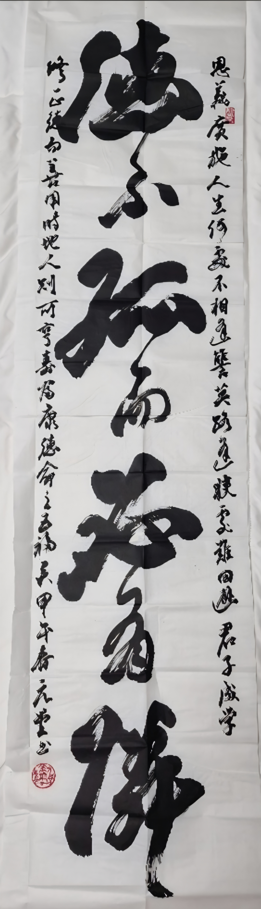

작품 상세 정보
분류: 족자 작품 (작품 07)
중심 대자: 德高行遠 (덕고행원)
형식: 전통 세로 족자 (양쪽 접서 포함)
작가: 원당 김제운
원문 및 내용: 德高行遠 恩深報遠 (덕고행원 은심보원)
해설: 덕이 높을수록 나아가는 길이 멀고, 은혜가 깊을수록 보답 또한 멀리까지 이어진다는 깊은 뜻을 담은 행초서 족자 작품입니다.
한국 전통·원당 김제운 작품 감상

분류: 족자 작품 (작품 07)
중심 대자: 德高行遠 (덕고행원)
형식: 전통 세로 족자 (양쪽 접서 포함)
작가: 원당 김제운
원문 및 내용: 德高行遠 恩深報遠 (덕고행원 은심보원)
해설: 덕이 높을수록 나아가는 길이 멀고, 은혜가 깊을수록 보답 또한 멀리까지 이어진다는 깊은 뜻을 담은 행초서 족자 작품입니다.